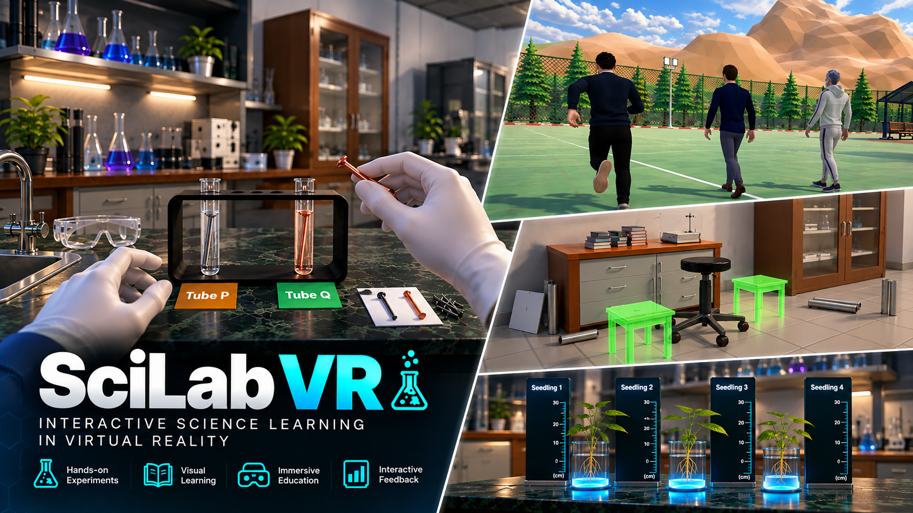
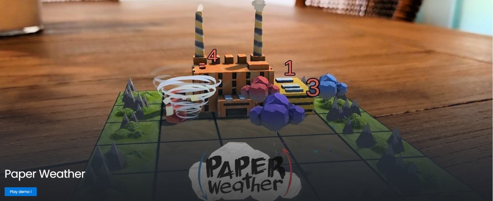

XR / VR Developer
Spark Capital
Developing Meta Quest 3 science-lab simulations, including multilingual UI, experiment validation, guided workflows and standalone VR performance optimization.
I'm Mohammad Tahmidul Hasan — a game and immersive-technology developer creating interactive experiences across VR, games and real-time 3D.
A collection of VR, game, simulation and interactive projects spanning research, education, training and entertainment.
A research-focused VR role-playing game designed around everyday routines and communication practice in familiar home, school and farm settings.
Enter project ↗ Featured Immersive Experience
Featured Immersive ExperienceA bilingual VR science lab with 13 guided Form 4 experiments across five curriculum chapters.
Enter project ↗
Educational XRVR museum experience for artifact inspection, conservation and preservation training.
Enter project ↗ Cultural Heritage XR
Cultural Heritage XRImmersive offshore VR training focused on interactive scenarios and hazard awareness.
Enter project ↗ Industrial Simulation
Industrial SimulationGamified employee onboarding designed to make orientation more interactive and engaging.
Enter project ↗ Interactive Onboarding
Interactive OnboardingFast-paced online multiplayer game built around competitive player interaction.
Enter project ↗ Multiplayer Gameplay
Multiplayer GameplayA first-person 3D walkthrough where visitors explore the biomedical park and activate videos at key locations.
Enter project ↗ Real-time Visualization
Real-time VisualizationA 2D action platformer with three levels, enemies and boss encounters, set in a fantasy kingdom.
Enter project ↗ 2D Platformer
2D PlatformerAtmospheric horror environment built around tension and environmental storytelling.
Enter project ↗ Horror Environment
Horror EnvironmentInteractive 3D classroom environments themed around different subjects.
Enter project ↗ Interactive Learning
Interactive LearningEducational action game using weather powers to fight pollution and restore the environment.
Enter project ↗
Educational GameI work across development, research and creative production, combining programming with game design and immersive interaction to turn ideas into working experiences.
My work spans VR and XR development, gameplay systems, rapid prototyping, interactive 3D environments and educational experiences, with a continuing interest in AI and machine learning for immersive technology.
Selected roles, research and project collaborations across games and immersive technology.
Developing Meta Quest 3 science-lab simulations, including multilingual UI, experiment validation, guided workflows and standalone VR performance optimization.
Led an educational VR role-playing research project for children with ASD, developing Unity scenarios and interaction systems and evaluating learning through structured study data.
Worked on a Unity and Meta Quest experience for artifact inspection and conservation learning, using scanned artifacts, damage visualization and guided educational overlays.
Developed an interactive Unity desktop visualization of the Biomedical Park, with a first-person exploration style and informational kiosks.
A Unity Windows onboarding application with insurance mini-games, training content, a 360° office tour and interactive UI.
Built 2D and 3D educational Unity games for browser, mobile and VR, including multiplayer features using Colyseus.
Developed a Unity relaxation experience for Meta Quest and PC, featuring 360° nature videos and calming audio-visual navigation.
Research on an educational immersive VR role-playing experience supporting everyday-life and communication skills for children with ASD.
Peer-reviewed work on immersive technology, educational games and virtual reality.
Sagar Prema Rajan, Imran Mahalil, Sharizal Pujahaas Bin Jaffar, Siti Azreena Binti Mubin, Vinesh Thiruchelvam, Mohammad Tahmidul Hasan, Hakeem Yunusmetov and Viman A Vinesh
Mohammad Tahmidul Hasan, Siti Azreena Mubin, Vinesh Thiruchelvam and Teoh Gaik Kin
Sagar Prema Rajan, Siti Azreena Mubin, Mohammad Tahmidul Hasan and Vinesh Thiruchelvam